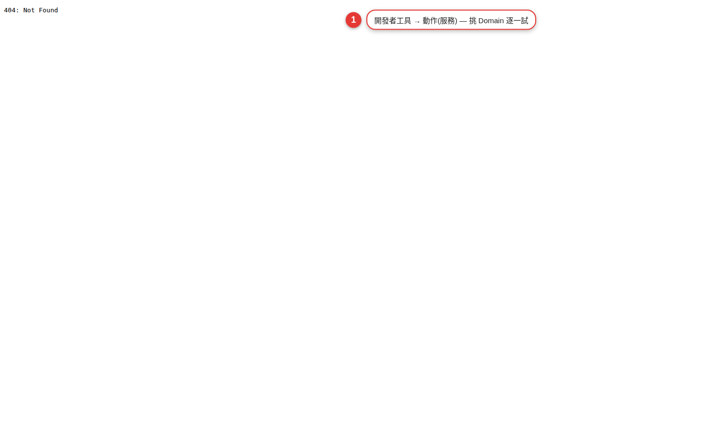

Domain 控制圖鑑
HA 把所有東西按「類別（Domain）」歸類：燈是 light、冷氣是 climate、窗簾是 cover。同一 domain 的所有裝置接受同一套服務，學會一個就會全部。這一章是每個常用 domain 的速查表。
Domain 是什麼？為什麼要理解它
每個 entity_id 都長成 domain.name，前面那半就是 domain：
light.livingroom_main→ domain 是lightclimate.bedroom_ac→ domain 是climatesensor.outdoor_temperature→ domain 是sensor
為什麼重要？因為 HA 的「呼叫服務」是以 domain 為單位。light.turn_on 可以打開任何品牌任何協定的燈—飛利浦 Hue、宜家 Tradfri、小米 Yeelight、Zigbee 通用燈、DIY WLED 燈條—都吃同一個服務。這是 HA 抽象化的強大之處。
light，你就知道所有現有燈的自動化都可以直接吃它，不用重寫。認成 switch 就沒亮度、色溫可調。light · 燈
可調亮度、色溫、顏色的照明設備。開關型（只有開/關）也可能被歸類到 light，端看整合。
常用服務
light.turn_on— 支援參數：brightness_pct: 60、color_temp_kelvin: 3000、rgb_color: [255, 100, 50]、transition: 5（漸變秒數）、effect: "colorloop"light.turn_off— 也支援transition（漸暗）light.toggle— 開關切換
常用 UI 卡片
- Light card：內建，滑動調亮度、按住開色板
- Tile card：小圖磚，適合排一整片
- Mushroom Light card（HACS）：更漂亮，滑條 + 色板整合
常見坑
- 燈被實體開關斷電：Zigbee 燈斷電就離線，開燈自動化跑不到。解法：裝不斷電的智慧開關，或把牆壁開關綁死開。
- 色溫單位：新版用
color_temp_kelvin（3000K 暖白 / 6500K 冷白）；舊版用color_temp（mired，數字越小越冷）。UI 選哪個看整合，寫 YAML 時 kelvin 比較直覺。 - 轉場（transition）小心：
transition: 30讓燈從當前 30 秒淡到目標亮度，如果同時來另一個 turn_on 會打斷，用restart模式的腳本包起來比較穩。
switch · 開關 / 智慧插座
純粹的通斷電。插座、繼電器、簡單牆壁開關都是這一類。
常用服務
switch.turn_on/switch.turn_off/switch.toggle— 沒別的參數，就是這麼單純。
常見用途
- 控制非智慧家電：飲水機、除濕機、風扇（老式）、聖誕燈
- 控制電磁閥：熱水器、灑水系統、瓦斯
- 控制電動窗簾馬達（但更建議認成
cover）
常見坑
- 斷電記憶：很多插座沒設「上電後恢復先前狀態」，跳電後全關。優先在 App 或 HA 設「Power on state = Last / On」。
- 能耗實體：許多智慧插座同時有
sensor.*_power、sensor.*_energy，可以拿去做能源儀表板，或當「洗衣機洗完了」的訊號（見範例）。
sensor.washer_power 從 >10W 掉到 <5W 持續 3 分鐘 → 推播」。比原廠 App 還好用。climate · 冷暖氣 / 空調 / 恆溫器
常用服務
climate.turn_on/climate.turn_offclimate.set_temperature— 參數：temperature: 26（單一目標溫度），或target_temp_high / target_temp_low（區間，恆溫器）climate.set_hvac_mode— 參數hvac_mode: cool / heat / auto / dry / fan_only / offclimate.set_fan_mode—fan_mode: auto / low / medium / high / on / off（值依廠牌）climate.set_preset_mode— 廠商預設模式（節能、睡眠、離家）climate.set_swing_mode— 掃風方向
UI 卡片
- Thermostat card：內建圓形溫度盤，最直觀
- Tile card：緊湊，適合多台空調並列
- simple-thermostat（HACS）：更多控制細節
常見坑
- 紅外冷氣的狀態不準：走 IR blaster 的冷氣（Broadlink、SwitchBot Hub）HA 只知道「發射過什麼指令」，不知道冷氣真的收到沒。加一顆溫度感測器對比實際溫度變化才靠譜。
- Preset 覆寫溫度：切到 preset「eco」通常會強制設定溫度，回
nonepreset 才能自由設。 - 單位：確認第 2 章的單位系統設「攝氏」，否則
temperature: 26會被當成華氏（很冷 XD）。
cover · 窗簾 / 車庫門 / 百葉窗
常用服務
cover.open_cover/cover.close_cover/cover.stop_cover/cover.togglecover.set_cover_position— 參數position: 50（0 全關、100 全開）cover.set_cover_tilt_position— 百葉窗葉片角度cover.open_cover_tilt/cover.close_cover_tilt
常見坑
- 方向反了：有些馬達的「開」跟你的直覺相反。到裝置頁「Reconfigure」或直接在設備 App 校準，不要在 HA 用
position: 100 - x反著寫。 - 沒 position 支援：便宜的窗簾馬達只有 open/close/stop 三段，設
set_cover_position會直接失敗。查裝置頁看 supported_features。 - 車庫門要
lock保險：cover.open_cover沒防呆，自動化寫錯可能半夜開車庫。用input_boolean當開關 + 條件檢查。
media_player · 電視 / 音響 / 串流盒
常用服務
media_player.turn_on / turn_off / togglemedia_player.volume_set（volume_level: 0.3，0-1）、volume_up / volume_down / volume_mutemedia_player.media_play / media_pause / media_stop / media_next_track / media_previous_trackmedia_player.play_media— 播特定內容（media_content_id+media_content_type）media_player.select_source— 換輸入源（HDMI1、Netflix、Spotify）media_player.select_sound_mode— 音場模式
整合差異大
- Google Cast：可推 URL 到 Nest Hub / Chromecast，適合廣播「洗衣機洗完了」的 TTS 語音
- Apple TV / Sonos / HEOS：支援豐富，含歌單、群組
- Samsung / LG TV：關機通常 OK，開機常常需要 Wake-on-LAN 額外設定
- Spotify / Plex：可以
play_media指定歌單 / 影片
常見坑
- 電視開機後 3-5 秒才接受指令，自動化寫「開機 + 換源」要中間加
delay。 - Cast 群組（好幾支喇叭群播）是額外的 media_player 實體，不是任一支喇叭的屬性。
lock · 智慧門鎖
常用服務
lock.lock/lock.unlocklock.open（如果是可電控門把，會實際打開）
常見坑
- 安全第一：門鎖自動化務必雙重保險。例：「離家自動上鎖」加條件「沒有人在家 + 過去 5 分鐘沒開門」。不要單純用時間觸發。
- 雲端延遲：品牌雲端整合（Yale、August、Aqara 雲端）常有 5-15 秒延遲。想低延遲用 Matter over Thread 或 Z-Wave。
- Unavailable 時不能鎖：如果門鎖跟主機斷線就無法遠端操作，走本地協定（Matter、Zigbee、Z-Wave）比純雲端可靠。
vacuum · 掃地機器人
常用服務
vacuum.start/vacuum.pause/vacuum.stopvacuum.return_to_base— 回充電座vacuum.locate— 響鈴找位置vacuum.set_fan_speed— 吸力等級vacuum.send_command— 傳自訂指令（各品牌不一，如 Roborock 的房間指定清掃）
常見用法
- 「大家都離家 30 分鐘 → 開始打掃」— 出門自動化
- 「Zigbee 動作感應器全部無動作 15 分鐘 + 平日下午」— 條件觸發
- 「客廳有訪客要來（Google Calendar 事件）→ 30 分鐘前打掃客廳」— 事件驅動
常見坑
- 雲端 API 限流：某些品牌雲端 API 每天呼叫次數有限制，別把自動化寫成每 1 分鐘查狀態。
- 房間 ID 是隱藏的：想「只掃客廳」得先在原廠 App 分區，然後從 HA 用
send_command傳房間 ID。ID 通常在裝置屬性或整合日誌找。
fan · 電風扇 / 天花板吊扇 / 空氣清淨機
常用服務
fan.turn_on/fan.turn_off/fan.togglefan.set_percentage（0-100 風速）fan.set_preset_mode（auto / sleep / turbo，依裝置）fan.oscillate（左右擺頭）fan.set_direction（吊扇順逆時針）
常見坑
- 空氣清淨機常同時屬
fan（風量）+sensor（PM2.5）+switch（負離子）三個 domain 分開的實體。 set_percentage: 0通常等於關機，要開回來記得先turn_on。
camera · 攝影機
常用服務
camera.snapshot— 拍一張存檔（參數filename: /media/snap_{{ now().timestamp() }}.jpg）camera.turn_on / turn_off（有些相機支援）camera.enable_motion_detection / disable_motion_detectioncamera.record— 錄一段影片
UI 卡片
- Picture entity：內建，最單純
- Picture glance：影像 + 上方小 icon 顯示相關實體（門鎖、燈）
- WebRTC card（HACS）：低延遲串流，適合門鈴
常見坑
- 雲端相機（Ring、Wyze、TP-Link Kasa）：畫面延遲 5-30 秒是常態，想即時要走 ONVIF / RTSP 本地流。
- Snapshot 檔案位置：預設
/config/www/才能被儀表板讀到；存/media/要另外配 media_source。
sensor / binary_sensor · 感測器
sensor 是有數值的感測器（溫度 25.3、電量 87%），binary_sensor 是只有兩態的（門開/關、有人/沒人、下雨/沒雨）。
它們不接受控制服務
感測器是唯讀。你不能「turn_on」一顆溫度感測器。感測器的價值在當觸發或條件：
- 觸發：「當
binary_sensor.motion_livingroom變 on → 開燈」 - 條件：「當日落時，如果
binary_sensor.someone_home是 on 才做事」 - 數值：「當
sensor.pm25> 35 → 開清淨機」
常用 device_class（決定圖示與行為）
sensor：temperature / humidity / pressure / illuminance / power / energy / battery / co2 / pm25binary_sensor：motion / occupancy / door / window / smoke / moisture / opening / battery / connectivity
常見坑
- Binary sensor 抖動：動作感應器常「亮 → 秒關 → 亮」，自動化寫「on → 開燈」跟「off → 關燈」會抖到頭暈。改用「for: 5 minutes」條件，狀態穩定 5 分鐘才動作。
- battery 是 sensor 不是 binary_sensor：想「電量低於 20% 提醒」用
sensor.*_battery+ numeric_state 觸發器。
notify · 通知
第 7 章講過，這裡補充參數細節。
Companion App 推播完整參數
service: notify.mobile_app_iphone
data:
title: 洗衣機洗完了
message: 記得拿出來
data:
push:
sound: US-EN-Alexa-Laundry-Ready.wav # iOS 音效
badge: 1
actions: # 可點按動作
- action: LAUNDRY_DONE
title: 好，我來拿
- action: LAUNDRY_SNOOZE
title: 10 分鐘後提醒
image: /api/camera_proxy/camera.laundry # 直接顯示相機截圖
tag: laundry # 相同 tag 會覆蓋前一則
channel: laundry # Android 通知通道
ttl: 0 # Android 高優先其他常用 notify.*
notify.persistent_notification— HA 內部通知（右上鈴鐺），不推手機notify.notify— 預設通知群組（發送到所有已設定的通道）tts.*— 語音朗讀（配合media_player），詳見第 12 章附錄語音章節
input_* · 輔助元件 Helpers
Helpers 是 HA 內建的「假實體」，讓你在自動化裡有東西可以「翻」— 詳見附錄 B。這裡列 domain 對照：
| Domain | 是什麼 | 常用場景 |
|---|---|---|
input_boolean | 開/關 | 「訪客模式」「渡假模式」開關 |
input_number | 可調數字 | 「自動開燈的照度門檻」用滑桿調 |
input_select | 下拉選單 | 「家庭模式」= 在家/離家/睡覺 |
input_text | 字串 | 記錄事件、當標籤 |
input_datetime | 日期/時間 | 「起床時間」讓家人自己在儀表板改 |
timer | 倒數計時器 | 「亮燈 5 分鐘後自動關」 |
counter | 整數計數器 | 「今日開門次數」 |
schedule | 週排程 | 「上班時段」以週為單位畫時間表 |
每個都有對應服務，例：input_boolean.turn_on、input_number.set_value、timer.start。附錄 B 有完整教學。
共通工具與心法
用「開發者工具」試服務
設定側邊選單→「開發者工具」→「服務」頁籤。可以選任何服務、填參數、按執行。這是你學新 domain 最快的方式：不用寫自動化，直接試。

用「狀態」看實體屬性
開發者工具 → 「狀態」頁籤 → 貼實體 ID → 看它有哪些 attributes。例如 light.livingroom 的屬性會有 supported_color_modes、min_color_temp_kelvin、max_color_temp_kelvin，這些決定你能設什麼參數。
心法總結
light / switch / cover / climate 這種「有名有姓」的 domain 通常後續體驗最好；如果只能認成一堆 sensor + switch（例如某些山寨 Tuya 電動窗簾），寫自動化會很痛。這一點在買設備前 Google「品牌 Home Assistant integration」就能查到。